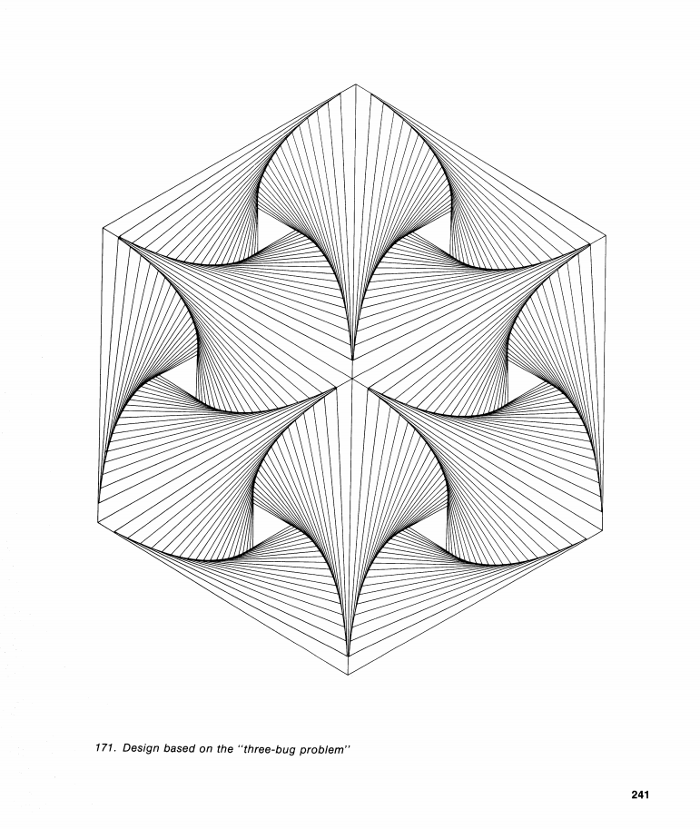

Matematica per immagini ai tempi del web
§2
Inganni

Ascending and Descending
1960 Litografia. 285mm x 355mm
Maurits Cornelis Escher


Andrew Lipson, 2002
http://www.andrewlipson.com/escher/ascending.html
§3
Interattività
Tolomeo (c. 100 - c. 170 AC)

Sistema tolemaico

Movimento di Venere rispetto alle stelle
Sole-Venere-Terra
https://gianmarco-todesco.github.io/toroidal-paradox/
§4
Bellezza

Design based on the "three-bug problem"
Book of Mathematical Diversions
§24 Op Art
Martin Gardner
drawing by Rutherford Boyd
for Scripta Mathematica
§5
Non solo geometria
http://www.datapointed.net/visualizations/math/factorization/animated-diagrams/
Animated
Factorization Diagram
(da un'idea
precedente di
Brent Yorgey)
Flashback

Thomas F. Banchoff & Salvador Dalì - New York, 1975
Crucifixion
(Corpus Hypercubus)
olio su tela
Salvador Dalì, 1954
Quarant'anni dopo
Cray-2 - 1985; Seymour Cray
Creare animazioni
nel World Wide Web
Hacking
Andiamo su un sito qualsiasi:
Ad esempio: https://www.unimore.it/
Tecniche
GIF animate (1989)
- Applet Java (1995)
- Macromedia Flash (1995)
- Java 3D (1998)
Tecniche
- SVG (1999)
- HTML5 (2008)
- WebGL (2007)
Librerie & Framework
- three.js (2010)
- processingjs.org (2010)
- D3.js (2011?)
- phaser.io (2013)
- p5.js (2013?)
- TWGL.js (2016?)
- Babylon.js (2016)
- paper.js (?)
- PIXI.js (?)
- ...